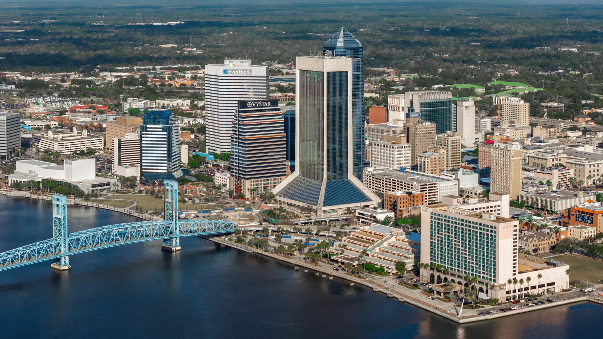

Jacksonville homes for sale tend to cost less than in South Florida and on much of the Gulf Coast, which is why many buyers look north. You'll find historic homes in Riverside and San Marco, family suburbs in Mandarin and newer communities on the south side, plus beach towns to the east. Lower prices don't mean zero risk: parts of the city sit along the St. Johns River and the coast, so check flood zones and insurance. Rui Cunha's office is in Deerfield Beach, and he works with buyers across Florida, including Jacksonville.
What it's like to live in Jacksonville
Jacksonville is Florida's largest city by population, because the city and Duval County are consolidated into one government. Florida's Office of Economic and Demographic Research estimated its population at 1,032,106 as of April 2025 (Florida EDR). The St. Johns River runs through the middle of the city, and the Atlantic beaches are to the east. Jacksonville Beach, Neptune Beach and Atlantic Beach are separate cities, so taxes and local rules there differ.
Neighborhoods and communities
A January 2026 neighborhood guide highlights these areas (PODS):
- Riverside and Avondale. Historic neighborhoods near downtown with tree-lined streets, Mediterranean Revival and Craftsman homes, restaurants and walkability.
- San Marco. An artsy historic area south of downtown with shops, galleries and dining.
- Mandarin. A family-friendly area along the river, known for its oak trees and schools.
- Arlington and Deerwood. Suburban areas east and southeast of downtown, with Deerwood built around its country club.
- Bartram Park. A newer suburban area with new construction.
- The Beaches. Mayport, plus the separate cities of Atlantic Beach, Neptune Beach and Jacksonville Beach, for coastal living.
Nearby suburbs such as Orange Park (Clay County) and Julington Creek (St. Johns County) are outside the city and in different school districts.
Jacksonville market snapshot: what "lower prices" means
According to Florida Realtors' August 2026 report, the median single-family sale price in the Jacksonville metro area was $405,000, compared with $415,000 statewide and $658,000 in the Miami–Fort Lauderdale–West Palm Beach metro (Florida Realtors). That metro figure includes pricier St. Johns County. In Duval County itself, the Northeast Florida Association of Realtors reported a single-family median of about $332,500 in April 2026, when the statewide median was $420,000 (Hoodline / NEFAR, May 2026).
In plain terms: the same budget usually buys more house in Jacksonville than in Broward or Palm Beach. Prices still vary a lot by neighborhood, and older homes may need more work. Ask Rui for a current comparison of recent sales for what you're actually considering.
Practical notes: river and coastal flooding, insurance and condos
Flood risk is real here too. During Hurricane Irma in 2017, significant flooding occurred along the banks of the St. Johns River from a combination of storm surge and rain, and the river gauge at Southbank Riverwalk in downtown Jacksonville reached 4.9 feet above the normal high-tide line (NHC, Irma report). In October 2024, Hurricane Milton still pushed 1 to 3 feet of surge along the Atlantic coast from Port Canaveral north to the Georgia border (NHC, Milton report). Homes near the river, its creeks and the beaches deserve a careful flood-zone check.
Before you make an offer:
- Check the FEMA flood zone and ask for an elevation certificate, especially near the river or the beaches.
- Get real homeowners and flood insurance quotes. Florida's Office of Insurance Regulation puts the statewide average homeowners premium at about $3,736 a year, including wind, in the admitted market (Florida Realtors, September 2026). Your quote depends on location, roof and the age of the home.
- If you'll insure through Citizens, flood coverage is becoming mandatory as that rule phases in through 2027 (News4JAX).
Condos. Buildings of three or more stories need milestone inspections (at 30 years, or 25 if the local building department requires it, then every 10 years — SB 154, 2023) and a Structural Integrity Reserve Study with funded reserves (Rimkus). Ask for the reserve study, budget, inspection reports and assessment history.
Homestead. If the home will be your primary residence, ask a CPA about Florida's homestead exemption. Second homes and non-residents don't qualify.
Schools
Jacksonville is served by Duval County Public Schools. Nearby suburbs in Clay and St. Johns counties have their own districts, so confirm the assigned schools for any address and check school grades with the Florida Department of Education.
Getting around
Jacksonville is spread out and car-dependent. I-95 and I-295 connect most of the city, and bridges over the St. Johns River can slow commutes, so test your route at rush hour. It's at the other end of I-95 from South Florida, so plan in-person visits with care.
Working with Rui in Jacksonville
Rui's office is in Deerfield Beach, and he helps clients across Florida. He has worked in Florida real estate since 2003, as a mortgage broker, a broker and a licensed General Contractor, which helps when you're judging an older home's condition or repair costs. He can help you buy a home, look into an ITIN mortgage or buy as an international buyer. Use the mortgage calculator to compare monthly costs, and compare with Tampa or Fort Lauderdale.
FAQ
Are homes cheaper in Jacksonville than in South Florida?
Generally, yes. Florida Realtors reported an August 2026 single-family median of $405,000 for the Jacksonville metro versus $658,000 for the Miami–Fort Lauderdale–West Palm Beach metro. In Duval County, the April 2026 single-family median was about $332,500, according to the local association of real estate agents.
Does Jacksonville flood?
Some areas do. During Hurricane Irma in 2017, there was significant flooding along the St. Johns River, and the beaches face storm surge risk. Check the flood zone, elevation and the home's history before you buy.
Is Jacksonville Beach part of Jacksonville?
No. Jacksonville Beach, Neptune Beach and Atlantic Beach are separate cities, even though they're in Duval County. Taxes, rules and services differ, so check the jurisdiction for any address.
Can I buy in Jacksonville without a Social Security number?
Many buyers use an ITIN mortgage, subject to lender approval. See our ITIN mortgage guide or contact Rui.
Talk to Rui
Comparing Jacksonville with South Florida? Ask Rui for a side-by-side look at recent sales and monthly costs.